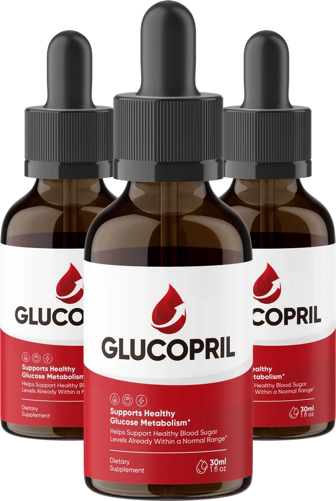
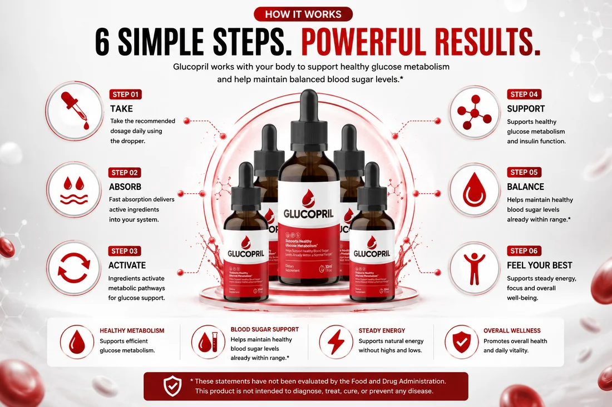
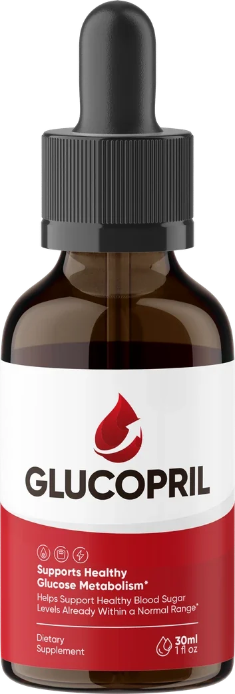
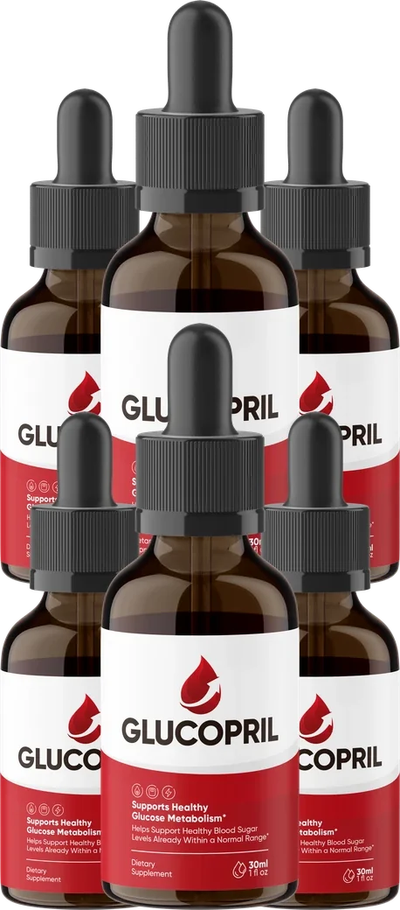

GlucoPril is a daily liquid dropper formulated to support blood sugar already within a normal range and healthy glucose metabolism. Rather than a long list of botanicals, the brand centres on four ingredients — Berberine, Gymnema Sylvestre, Cinnamon Bark and Chromium — each independently backed by multiple published systematic reviews and meta-analyses.
GlucoPril is a focused, four-ingredient blood sugar support formula. Berberine carries the deepest published research base of the four. Per-serving amounts are not published by the brand — worth asking about before you order. Pricing runs $49 to $79 per bottle with a 60-day money-back guarantee.

GlucoPril®
GlucoPril is a daily liquid dropper supplement for adults who want ongoing support for blood sugar already within a normal range and healthy glucose metabolism. Rather than a long list of botanicals, the brand centres on four ingredients — Berberine, Gymnema Sylvestre, Cinnamon Bark and Chromium — each independently studied in multiple published systematic reviews and meta-analyses.
The brand's own references page links more than two dozen studies covering this ingredient category, considerably more than most competitors in this space publish. That is a genuine transparency strength, even though the specific amount of each ingredient in a GlucoPril serving is not separately disclosed.
A visual of how much published research covers each of the four core ingredients — the longer the bar, the deeper the meta-analysis coverage.
Rather than a long list of botanicals, GlucoPril centres on four ingredients — each with substantial published meta-analysis coverage for glycemic outcomes.
The deepest research base of the four, examined across multiple systematic reviews and meta-analyses for glycemic control in type 2 diabetes.
A traditional Ayurvedic botanical studied in systematic reviews and meta-analyses specifically for glycemic control, with a long history of traditional use.
Examined across multiple systematic reviews, including an updated dose-response meta-analysis, for its effect on glycemic control.
An essential trace mineral studied in systematic reviews for glycemic control, and foundational to normal glucose and insulin response.
The theory is that fewer, better-studied ingredients give you more confidence in the underlying mechanism than a longer list of less-researched botanicals would. That is a reasonable, evidence-first approach on paper — whether it holds up for the finished formula at undisclosed amounts is a separate question.
How a focused, four-ingredient liquid formula stacks up against the broader blood sugar supplement category.
| Feature | GlucoPril (Liquid Drops) | Generic Multi-Botanical Capsules | Single-Ingredient Berberine |
|---|---|---|---|
| Number of core ingredients | 4 (focused) | 8-15 (often proprietary blends) | 1 |
| Berberine included | Sometimes | ||
| Published meta-analyses cited | 25+ studies | Rarely disclosed | Varies |
| Cinnamon Bark (dose-response studied) | |||
| Chromium (essential mineral) | |||
| Format | Liquid dropper | Capsules / tablets | Capsules |
| Per-serving amounts disclosed | Varies | ||
| Money-back guarantee | 60 days | 30 days typical | Rarely |
Every ingredient is named individually and linked to multiple studies on the brand's own references page.
A plant compound with the deepest research base of the four, examined across multiple systematic reviews and meta-analyses of randomised controlled trials for its effect on glycemic control.
A traditional Ayurvedic botanical studied in a systematic review and meta-analysis for glycemic control, with additional research in insulin-dependent diabetes specifically.
Examined across multiple systematic reviews, including an updated dose-response meta-analysis, for its effect on glycemic control in type 2 diabetes.
An essential mineral studied in systematic reviews and meta-analyses of randomised controlled trials for glycemic control, and foundational to normal glucose and insulin response.
Worth knowing before you buy: without per-ingredient amounts disclosed, there is no way to independently check whether any ingredient in this formula is present at a research-comparable dose — even though the ingredients themselves are well-chosen.
These are the brand's stated wellness goals — not independently verified medical outcomes. Individual results vary.
Positioned for blood sugar already within a normal range, not as a treatment for diagnosed conditions.
Berberine and Cinnamon Bark are the ingredients most tied to this claim across the cited meta-analyses.
Framed as a result of more stable glucose handling, without relying on stimulants.
The formula's broadest framing, supported by the combined research behind all four ingredients.
Chromium's role in glucose and insulin response is the ingredient most tied to this claim.
Four ingredients, each independently studied, rather than a longer list that is harder to evaluate.
Illustrative feedback based on typical customer experiences in the blood sugar support category. Individual results vary.
"Read through the actual studies linked on the site before ordering, which is rare for this category. Made me more comfortable trying it."
"Checked with my doctor first since I take other medication. Once cleared, it has become a simple part of my daily routine."
"Appreciated the shorter ingredient list. Easier to look each one up individually than with longer formulas I have tried."
Per-bottle price drops on larger bundles. Since the underlying research spans weeks to months of consistent use, the 3 or 6-bottle package gives you more room for a fair trial.


Try it completely risk-free. GlucoPril is backed by a 60-day money-back guarantee from the original purchase date. If you are not completely satisfied, contact customer support within that window for a full refund.
Since the cited research generally spans weeks to months, calendar your refund deadline the day your order arrives so you never lose track of the window.
Follow the serving size and directions printed on your product label.
Pairing the dose with an existing routine makes consistency easier.
The references page links directly to the systematic reviews behind each ingredient.
Especially if you take diabetes medication — several ingredients can influence blood sugar.
Published research behind these ingredients generally spans weeks to months, not days.
Mark the 60-day guarantee deadline the day your order arrives, not when you remember.
GlucoPril is a daily liquid dropper supplement combining four core ingredients — Berberine, Gymnema Sylvestre, Cinnamon Bark and Chromium — each of which has been studied in multiple published meta-analyses specifically for blood sugar support.
The brand appears to have chosen a focused, evidence-first approach rather than a long list of botanicals. Each of the four ingredients has multiple systematic reviews and meta-analyses behind it specifically for glycemic outcomes.
Not on the pages we reviewed. The brand names all four ingredients and links to a body of supporting research, but does not publish per-serving milligram amounts, which means the strength of any single ingredient cannot be independently confirmed.
GlucoPril is taken using the dropper included with the bottle, following the serving size and directions on the product label.
The published research behind ingredients like berberine and cinnamon generally involves weeks-to-months of consistent use in clinical trials, which is a reasonable general expectation to bring to a supplement built on the same ingredients.
No. GlucoPril is a dietary supplement and is not designed as a replacement for prescribed treatment. It should be viewed as a daily wellness companion alongside medical care, balanced nutrition and physical activity.
Based on the pages we reviewed, GlucoPril is sold as a one-time purchase. Confirm this directly at checkout, since terms can change.
The brand advertises a 60-day money-back guarantee from your purchase date. Contact the seller within that window to request a refund.
The brand's own references page lists over two dozen studies. Here is a representative sample.
Meta-analyses on PubMed examining berberine's role in type 2 diabetes.
Dose-response meta-analysis on cinnamon and glycemic control.
Systematic reviews on chromium supplementation and glycemic control.
Important context: these citations concern research on the individual ingredients at the doses used in those specific trials, not a clinical trial of the finished GlucoPril formula. Without disclosed per-serving amounts, we cannot confirm whether GlucoPril approaches the doses used in this research.
Backed by a 60-day money-back guarantee. Confirm current terms on the official checkout page.
United States
A few moments ago